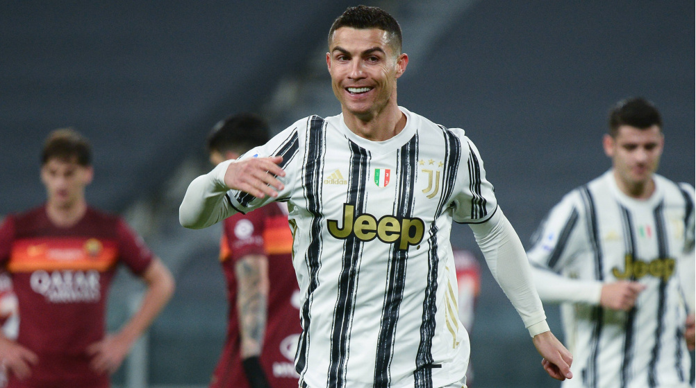
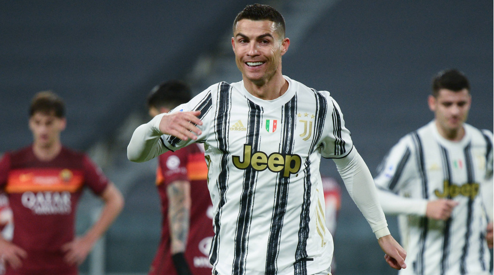

Here is a time line of CR7's carrer:
- 2002 – Sporting CP Debut:Ronaldo made his professional debut for Sporting CP at just 17 years old.
- 2003 – Manchester United Signing:Ronaldo signed with Manchester United, where he started his international career and quickly became a rising star.
- 2007 – First Premier League Title:First Premier League Title: Ronaldo won his first Premier League title with Manchester United and began to establish himself as one of the best players in the world.
- 2008 – First Ballon d'Or:After a sensational season with Manchester United, including winning the Champions League, Ronaldo earned his first Ballon d'Or.
- 2009 – Real Madrid Transfer:Ronaldo moved to Real Madrid for a world-record fee of €94 million, becoming the cornerstone of the team's success.
- 2014 – Champions League and Third Ballon d'Or:Ronaldo led Real Madrid to their 10th Champions League title ("La Décima") and won his third Ballon d'Or.
- 2016 – Euro 2016 Victory:Ronaldo captained Portugal to their first major international trophy by winning UEFA Euro 2016.
- 2017 – Fifth Ballon d'Or:After winning another Champions League with Real Madrid, Ronaldo earned his fifth Ballon d'Or, tying Lionel Messi at the time.
- 2018 – Juventus Move:Ronaldo transferred to Juventus for €100 million, continuing his success by winning domestic titles in Italy.
- 2021 – Return to Manchester United:After three years at Juventus, Ronaldo returned to Manchester United to continue his illustrious career.
 

A player could come here, spend 20 years playing in this side and still not achieve what he's done. I hope he continues making history here until he retires.
Zinedine Yazid Zidane, Reuters
If you have the chance, you should check out his Wikipedia page to learn more about this remarkable person.